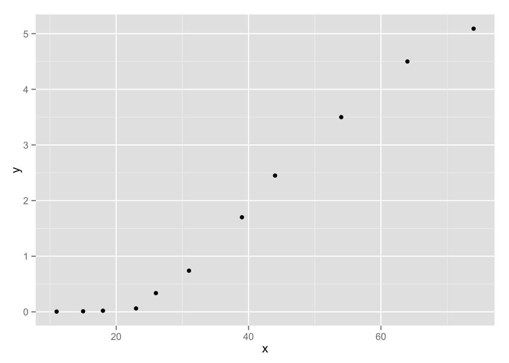
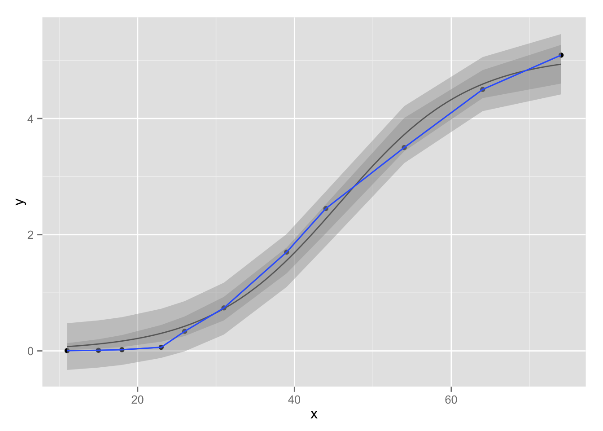

We will model the time evolution of an algal sample taken in the Adriatic Sea (Cavallini, 1993). Time (\(x\)) is expressed in days and biomass (\(y\)), which is a measure of growth, is measured in mm2 (what is actually measured is the surface covered by biomass in a microscopic sample). The data seem to follow a logistic curve: \[y_i = \frac{\theta_0}{1 + \exp (-\theta_1(x_i - \theta_2))}\]
algal <- data.frame(x = c(11, 15, 18, 23, 26, 31, 39, 44, 54, 64, 74),
y = c(.0048, .0105, .0207, .0619, .3370,
.7400, 1.7, 2.45, 3.5, 4.5, 5.09))
kable(algal, row.names = T)| x | y | |
|---|---|---|
| 1 | 11 | 0.0048 |
| 2 | 15 | 0.0105 |
| 3 | 18 | 0.0207 |
| 4 | 23 | 0.0619 |
| 5 | 26 | 0.3370 |
| 6 | 31 | 0.7400 |
| 7 | 39 | 1.7000 |
| 8 | 44 | 2.4500 |
| 9 | 54 | 3.5000 |
| 10 | 64 | 4.5000 |
| 11 | 74 | 5.0900 |
require(ggplot2)
p <- ggplot(data = algal, aes(x, y)) + geom_point()
p
In R, we can perform the grid search and find the starting value manually.
# setup grid
grid <- expand.grid(theta0 = seq(0, 10, 2),
theta1 = seq(0, .5, .1),
theta2 = seq(40, 60, 5))
kable(head(grid))| theta0 | theta1 | theta2 |
|---|---|---|
| 0 | 0 | 40 |
| 2 | 0 | 40 |
| 4 | 0 | 40 |
| 6 | 0 | 40 |
| 8 | 0 | 40 |
| 10 | 0 | 40 |
We specify the nonlinear model and compute the sum of squares of error manually.
nlmodel <- function(x, theta) {
theta[1] / (1 + exp(-theta[2] * (x - theta[3])))
}
sse <- apply(grid, 1, function(theta) {
sum((algal$y - nlmodel(algal$x, theta))^2)
})
kable(head(data.frame(grid, sse))) # only the head of the table is shown| theta0 | theta1 | theta2 | sse |
|---|---|---|---|
| 0 | 0 | 40 | 67.96616 |
| 2 | 0 | 40 | 42.13636 |
| 4 | 0 | 40 | 38.30656 |
| 6 | 0 | 40 | 56.47676 |
| 8 | 0 | 40 | 96.64696 |
| 10 | 0 | 40 | 158.81716 |
Final starting values:
grid[which.min(sse), ]## theta0 theta1 theta2
## 82 6 0.1 50nls_fit <- nls(y ~ nlmodel(x, theta), data = algal, trace = T,
start = list(theta = c(6, .1, 50)))## 0.6350226 : 6.0 0.1 50.0
## 0.2857354 : 5.0141669 0.1157241 45.8625826
## 0.2384547 : 5.0887283 0.1221786 45.7619359
## 0.2381781 : 5.0956237 0.1211468 45.7748836
## 0.2381669 : 5.0947305 0.1213394 45.7743463
## 0.2381665 : 5.0949589 0.1213007 45.7748138
## 0.2381664 : 5.0949235 0.1213077 45.7747829
## 0.2381664 : 5.0949315 0.1213063 45.7747980
## 0.2381664 : 5.0949302 0.1213066 45.7747966nls_fit## Nonlinear regression model
## model: y ~ nlmodel(x, theta)
## data: algal
## theta1 theta2 theta3
## 5.0949 0.1213 45.7748
## residual sum-of-squares: 0.2382
##
## Number of iterations to convergence: 8
## Achieved convergence tolerance: 1.925e-06sm <- summary(nls_fit, correlation = T)
sm$coefficients## Estimate Std. Error t value Pr(>|t|)
## theta1 5.0949302 0.19766239 25.77592 5.505407e-09
## theta2 0.1213066 0.01159284 10.46393 6.044273e-06
## theta3 45.7747966 1.17097569 39.09116 2.015699e-10sm$correlation## theta1 theta2 theta3
## theta1 1.0000000 -0.6865027 0.8166978
## theta2 -0.6865027 1.0000000 -0.6528791
## theta3 0.8166978 -0.6528791 1.0000000# the output shows theta 1-3, it's actually theta 0-2
mapply(function(est, se) est + qt(c(.025, .975), df.residual(nls_fit)) * se,
sm$coefficients[, 1], sm$coefficients[, 2], SIMPLIFY = F)## $theta1
## [1] 4.63912 5.55074
##
## $theta2
## [1] 0.09457346 0.14803972
##
## $theta3
## [1] 43.07452 48.47507y0 <- fitted(nls_fit)
cf <- cf <- nls_fit$m$gradient()
se <- apply(t(cf), 2, function(f0) {
sm$sigma * {t(f0) %*% sm$cov.unscaled %*% f0}^(.5)
})
ll <- fitted(nls_fit) + qt(.025, df.residual(nls_fit)) * se
ul <- fitted(nls_fit) + qt(.975, df.residual(nls_fit)) * se
ci <- data.frame(algal, ll, ul)
# prediction intervals are similar
se <- apply(t(cf), 2, function(f0) {
sm$sigma * {1 + t(f0) %*% sm$cov.unscaled %*% f0}^(.5)
})
ll <- fitted(nls_fit) + qt(.025, df.residual(nls_fit)) * se
ul <- fitted(nls_fit) + qt(.975, df.residual(nls_fit)) * se
pi <- data.frame(algal, ll, ul)
p + stat_function(fun = nlmodel, args = list(coef(nls_fit))) +
geom_smooth(aes(ymin = ll, ymax = ul), data = ci, stat="identity") +
geom_smooth(aes(ymin = ll, ymax = ul), data = pi, stat="identity")